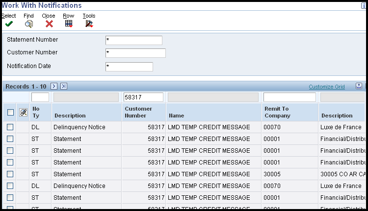
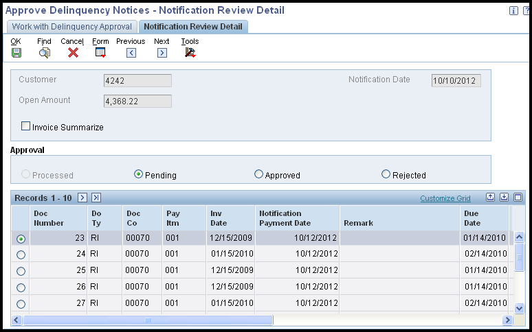
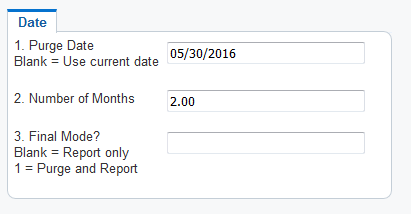
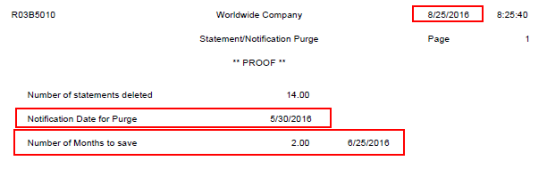

When customers are delinquent in paying their bills, you can send a delinquency notice on overdue invoices as a reminder to pay the delinquent balance. Delinquency notices are created by running the Print Delinquency Notices version (XJDE0002) of the Credit Analysis Refresh program (R03B525). This version has predefined processing options set for printing delinquency notices and calls either the AR Delinquency Notice Print (R03B20), or from release 8.9, the Global Reminders (R03B21) to generate the notices. The system generates notices based on the delinquency policy that is assigned to the customer. See How To Set Up Delinquency Notices and Fees for further information on setting up delinquency policies and the system set up requirements for generating notices.
Prior to release 8.9, only the A/R Delinquency Notice Print (R03B20) program can be called from Credit Analysis Refresh to print notices. From release 8.9 onwards, there is a further option to use Global Reminders (R03B21), which is also referred to as Tiered Delinquency Notice Print.
This table lists the differences between the two programs:
Difference
R03B20
R03B21
Columns printed
The notice includes this information:
Document number
Invoice date
Due date
Remark
Foreign open amount
Currency code
Open amount
Base currency code
Number of reminders sent
The notice includes all the information that R03B20 does, plus this:
Pay item
Foreign gross amount
Gross amount
Notification date
Print Who’sWho contact information
NA
A processing option exists to specify a contact name to print from the Who’s Who record based on a type code.
Print invoices in summary or detail
The notice prints each invoice pay item (detail).
A processing option exists to print each invoice pay item (detail) or each invoice document (summary).
Consolidated fees
NA
A processing option exists to summarize all fee invoice records in one detail line on the notice. The system prints * for the document number for consolidated fee records.
Regardless of which option you choose, you can run Print Delinquency Notices in Proof or Final mode and the same tables, as outlined below, will be updated.
Scope
Details
Generate Delinquency Notices
Once the set up steps outlined in How To Set Up Delinquency Notices and Fees have been completed, delinquency notices can be generated by running the Generate Delinquency Fees version of Credit Analysis Refresh (R03B525). Select version XJDE0002 or a copied version to Print Delinquency Notices. This version has pre-defined processing options set for delinquency notices. This can be run in either proof or final mode. The system will:
Use the processing options to retrieve aging information from the A/R Constants or from R03B525 processing options.
Use the customers policy to determine the notice to print.
Print one notice per customer, regardless of the number of invoices that are past due. The system prints the notice associated with the aging category of the latest invoice, if invoices fall in different aging categories that would produce different notices.
If the program is run in final mode (per the processing option on Notices tab), the Date of Last Sent Reminder (RDDJ) and the Number of Reminders Send (RMDS) fields in the Customer Ledger table (F03B11) are updated.
IMPORTANT: Aging may be based on either the A/R Constants or the processing options for printing delinquency notices. The Date: Age As Of field, in conjunction with the Date Type and Aging Method fields, are used to determine the appropriate aging category for the invoice. If the invoice is assigned to an aging category for which a delinquency policy has been established, a notice is generated.
If Collection Manager Approval is indicated in the policy, notices will not be printed until they are approved.
There is no report output for Credit Analysis Refresh (R03B525), instead output is produced for R03B20 and R03B21 as follows:
Notices created for R03B20 using the relevant letter text according to the policy attached to the customer and the aging method selected.
Notices created for R03B21 using the relevant letter text according to the policy attached to the customer and the aging method selected.
Setting Up Processing Options for Credit Analysis Refresh (R03B525) 'Notices' Tab
Notices Tab - These processing options specify how the system generates delinquency notices. You can specify options such as generation mode (proof or final), version, and the "remit to" address.
Generate Delinquency Notices - Specify how the system generates delinquency notices. Values are:
Blank: The system does not generate delinquency notices.
0: Proof mode. The system generates a report that includes all customers who are eligible to receive a delinquency notice and the invoices that are delinquent for each customer.
1: Final mode. The system generates a delinquency notice for each eligible customer and updates these tables:
A/R Notification History (F03B20)
A/R Notification History Detail (F03B21)
Customer Ledger (F03B11)
Notice Print Program - Specify the Delinquency Notice Print Program that you want the system to run when you generate delinquency notices. You can select one of the standard programs, or create a custom print program. If you leave this field blank the system uses R03B20. The available standard programs are:
R03B20: A/R Delinquency Notices Print
R03B21: Global Reminders (Also referred to as Tiered Delinquency Notice Print in later releases)
NOTE: Both R03B20 and R03B21 have processing options associated with them.
Version for Notices - Specify the version of the delinquency notice print program specified in the Notice Print Program processing option. If you leave this processing option blank, the system uses ZJDE0001.
Remit To Address - Specify the remit to address that appears on the delinquency notice. The remit to address indicates where the customer should send payments. The system retrieves this address based on the address book record that is set up for the company that is designated on the invoice in the Address Book Master table (F0101). Values are:
Blank: Use the address of the company designated on the F03B11 invoice record. The system retrieves the address book number of the company from the Company Constants table (F0010). NOTE: If you select to consolidate notices for all companies, the system uses the address of the company with the lowest company number for which that customer has open invoices. For example, if the customer has open invoice in companies 00001, 00050, and 00070, the system uses the address for company 00001.
A: Use the value in the 1st Address Number field (AN81) of the company record.
B: Use the value in the second Address Number field (AN82) of the company record.
C: Use the value in the third Address Number field (AN83) of the company record.
D: Use the value in the fourth Address Number field (AN84) of the company record.
E: Use the value in the Factor/Special Payee field (AN85) of the company record.
F: Use the value in the 5th Address Number field (AN86) of the company record.
Address: Specify an address book number that you want the system to use instead of the company’s address book number.
NOTE: You can specify that the system omits printing the Remit To address by setting the processing option in the A/R Delinquency Notices Print (R03B20) or the Global Reminders program (R03B21).
Consolidate Companies - Specify how the system generates notices. Values are:
Blank: The system generates a separate notice for each company, by customer.
1: The system generates notices that consolidate companies, by customer.
Determine Severity Level - Specify whether the system locates the notification instructions (policy) based on the aging category or the severity level of the invoice. Values are:
Blank: Use the aging category.
1: Use the total number of reminders sent to determine the severity level. For example, if the number of reminders (notices) sent is 2, the system searches for a policy that specifies 3 in the Aging Category/Severity field.
Display non-delinquent Invoices - Use this processing option to control the invoice detail printed on delinquency notices. Values are:
Blank: Display only delinquent invoices in detail. No credits are displayed.
1: Display all invoices in detail, including credits.
Setting Processing Options for A/R Delinquency Notices Print (R03B20)
Print Tab - These processing options determine whether specific information prints on the delinquency notice.
Remit to Address - Specify whether to print a Remit To address on the delinquency notice. The system uses the Remit To address that is specified in the processing options of the Credit Analysis Refresh program (R03B525) on the Notices tab. Values are:
Blank: Do not print a Remit To address.
1: Print a Remit To address.
Account Aging - Specify whether to print aging information on the delinquency notice. Values are:
Blank: Do not print aging information.
1: Print aging information.
Currency Type - Specify whether to print the description of the currency code on the delinquency notice or to print TOTAL CURRENCY BALANCE DUE as static text on the delinquency notice. Values are:
Blank: Print TOTAL CURRENCY BALANCE DUE.
1: Print the description of the currency code.
Number of sent reminders - Specify whether to print the number of reminders previously sent on the delinquency notice. Values are:
Print Tab - These processing options specify whether specific information prints on the delinquency notice and, in some cases, the format of that information.
Remit to address - Specify whether to print a Remit To address on the delinquency notice. The system uses the Remit To address that is specified in the processing options of the Credit Analysis Refresh program (R03B525) on the Notices tab. Values are:
Blank: Do not print a Remit To address.
1: Print a Remit To address.
Who’s who contact record type - Specify the type code to use to determine the name from the Address Book - Who’s Who table (F0111) to print on the delinquency notice. The system prints the name that is identified by the type code after the word Attention: to direct the delinquency notice to a particular person at the customer’s company. If you leave this processing option blank, the system does not print an attention line on the delinquency notice.
Account Aging - Specify whether to print aging information on the delinquency notice. Values are:
Blank: Do not print aging information.
1: Print aging information.
Currency type - Specify whether to print the description of the currency code on the delinquency notice or to print TOTAL CURRENCY BALANCE DUE as static text on the delinquency notice. Values are:
Blank: Print TOTAL CURRENCY BALANCE DUE.
1: Print the description of the currency code.
Number of sent reminders - Specify whether to print the number of reminders previously sent on the delinquency notice. Values are:
Blank: Do not print the number of reminders sent.
1: Print the number of reminders sent.
Detail or summarized - Specify whether to print each invoice pay item on the delinquency notice or a summarized record of all invoice pay items. Values are:
Blank: Print in detail. The system prints each invoice pay item as a separate line on the notice.
1: Print in summary. The system prints one line per invoice and summarizes the amount.
Consolidated Fees - Specify whether to print each fee record on the delinquency notice or one consolidated fee record that summarizes all fee amounts. Values are:
Blank: Do not consolidate. The system prints each fee record as a separate line on the notice.
1: Consolidate. The system prints one consolidated fee record for the sum of all fee amounts.
Review Delinquency Notices
Once notices have been generated, they may be reviewed for content. You may also need to reprint a notice for a customer.

From Review Delinquency Notices (P03B202), complete the desired search criteria (such as customer number, notification date, notification type), then click 'Find'.
Choose the notice to review and click 'Select'. This will display details of the invoices included on the notice.
To reprint a notice:
You may also need to reprint one for a customer. To do this, choose the notice that you want to reprint on Work With Notifications, and then choose Reprint from the Row menu. The system runs the print program when you exit the Work With Notifications form.
Changing notification print information. You can change the information that the system uses to print notices. For example, you can change the print program and the version that the system uses to reprint notices. To change notification print information, choose Print Information from the Row menu on the Work With Notifications form.
Approve Delinquency Notices
When Collection Manager Approval is indicated in the policy, the notices must be approved before they can be generated. See How To Set Up Delinquency Notices and Fees for further information on setting up delinquency policies.
Navigate to Approve Delinquency Notices (P03B201).
Input the Customer Number and/or Notification Date, then click 'Find'. The A/R Notification History Table (F03B20) is read and all delinquency notices for the customer are displayed.
Choose the notice that is to be approved, and click 'Select'.
Review the information and click either 'Approved' or 'Rejected'.
Click 'OK'. After the notice is approved, exit the Notification Review Detail form. The A/R Delinquency Notices Print program (R03B20) is executed using the version established in the processing options when the notices were created. A report is generated.

Purge Delinquency Notices
The Statement/Notification Purge (R03B5010) removes delinquency notice records form the AR Notification History (F03B20) and AR Notification History Detail (F03B21) tables.
NOTE: The system does not write purged information to another table for archiving.
The system purges both statement and delinquency notices unless you specify a notification type in the data selection. So to purge only delinquency notices, be sure to use the notification type 'DL' in the data selection. The system purges records based on the values in the Notification Date processing option and Number of Months processing option. If these two processing options are not used in conjunction with each other, the system reads the oldest value in either processing to purge the fewest number of records.
NOTE: The system does not purge records with a future date. To remove all records in the F03B20 and F03B21 tables, consider using a data file utility.
Setting Processing Options for Statement/Notification Purge (R03B5010)
Date Tab - These processing options specify the records that the system purges, as well as whether the program is run in proof or final mode.
Notification Date for Purge - Use this processing option in conjunction with the Number of Months processing option to specify the records to purge from the F03B20 and F03B21 tables. The system purges all records with a notification date that is equal to or less than the date specified, unless the number of months specified selects fewer records. For example, if you specify a Notification Date for Purge of December 31, 2016, but also specify to retain six months of data (Number of Months = 6), the system determines which processing option purges the fewest records and uses that processing option. If you leave this processing option blank, the system uses today’s date to determine the number of records that will be removed and compare that number of records to the number of records determined by the Number of Months to retain.
Number of Months to save - Use this processing option in conjunction with the Notification Date processing option to determine the number of records to purge from the F03B20 and F03B21 tables. NOTE: The Number of Months to save uses the date of execution of the program as the base date. The system removes all records with a Notification Date for Purge that is older than the number of months specified, unless you specify a date in the Notification Date for Purge processing option that results in fewer records to purge. Example: - The date you are executing the R03B5010 is 08/25/16 - You specify to retain two months of data (Number of Months = 2) - (the program will use 06/25/16 for the comparison) - You enter a Notification Date for Purge of 05/30/16 The system uses the Notification Date of 05/30/16 since it will remove less records than the Number of Months to save specified.
Final Mode - Specify whether to run this program in proof or final mode. In proof mode, the system only prints a report of the records that will be purged. In final mode, the system purges the records from the tables, as well as prints a report. Values are:
Blank: Print a report only.
1: Purge the records and print a report.


Troubleshooting Tips
Tip 1: Setup issues account for the majority of calls to EnterpriseOne Global Support. If, after checking everything below, delinquency notices are not generated, review your data by reviewing the F03B11 records and how they were created. See How To Set Up Delinquency Notices and Fees for further information on Delinquency Notice set up.
Tip 2: On release Xe- ERP8.0 - When running a batch application where a string of UBEs are involved (for example notices/fees, statements, auto cash), we recommend running the UBEs locally on a fat client when possible.
Tip 3:Ensure the Delinquency Notice check box is checked in the A/R company constants, CCDNLT = Y in the F0010 table.
Tip 4: Verify that the Customer Master is setup to generate Notices (Collection tab) to have future invoices be considered for a delinquency notice.
Tip 5: Ensure the Delinquency Notice Y/N field is flagged with a Y on each delinquent transaction record, RPDNLT = Y on the F03B11 records. Individual F03B11 records can be flagged via Speed Status Change (P03B114). When a transaction is created, the RPDNLT value is assigned based on the AIDNLT value on the customer master record, F03012.
Tip 6: Ensure a valid policy is referenced on the Collection tab of the Customer Master record.
Tip 7: Ensure the data selection item on the version of R03B20 includes 'And BC Notification Type (F03B20) = 'DL''.
Tip 8: Ensure the difference between the Date: Age As Of processing option on the Aging tab behind R03B525 and the Days Between Notifications on the delinquency policy sufficiently exceeds (by at least 1) the RPRDDJ date on the open F03B11 record.
Tip 9: Ensure the Threshold Percent and Minimum Amount on the policy does not exceed the TOTAL OPEN AMOUNT for that particular Aging Category.
Tip 10: After running R03B525 to generate notices, use Review Delinquency Notices (P03B202) to review records in the F03B20 and F03B21 tables. If, after running R03B525, no records are generated in the F03B20 and F03B21 then be sure to review all previous suggestions.
Tip 11: If the above suggestions do not resolve the issue, add a new company specific policy and populate the aging categories, letter name/type and Activity Item Priority.
Tip 12: Use the 'Add' rather than 'Copy' function to create new versions of both the R03B525 and R03B20 or R03B21. On releases Xe and ERP8.0, submit R03B525 to run locally. When R03B525 is run locally R03B5005 and R03B20/R03B21 will also run locally.
Tip 13: Processing suggestions. Review the following processing option values on R03B525:
Workfile tab: When running notices with data selection, do not build the workfile. This will affect the balance inquiry information in P03B218.
Notices Tab: Run in Proof mode first to verify results. Then run in Final mode.
Fees Tab: Ensure sure all fields are blank when processing notices.
Tip 14: Invoices with future due dates will appear on delinquency notices. This functionality is by design of the application. Invoices with future due dates can be excluded from processing using data selection on the R03B525.